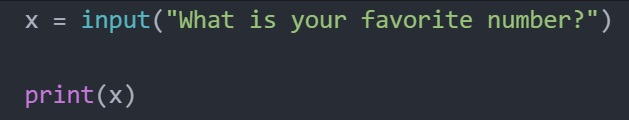
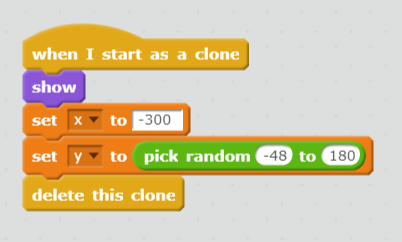
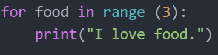
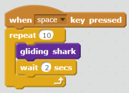
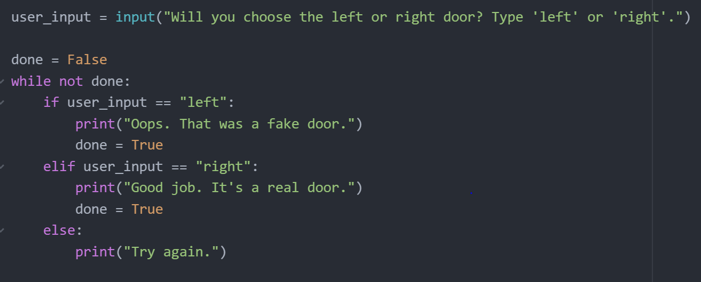
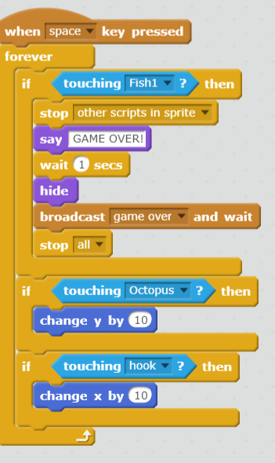
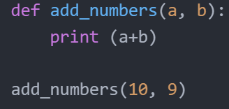
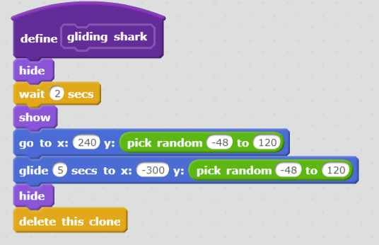

| core4 concept | technical definition | real-life analogy | python example | scratch example |
|---|---|---|---|---|
| variables | a variable, as opposed to a constant, is a value that can change. usually, it is assigned a value by the programmer or through input. | a variable is similar to cubby-holes - items can be "assigned" or put into a cubby-hole. |  |  |
| loops | a loop is a set of code that leads to repeated behavior when the code is run - the code is repeated until a certain condition is reached. | a loop is similar to telling a devie to repeat a song for a set number times. |  |  |
| conditionals | a conditional is a function that performs a set of code based on certain conditions, such as user input. | a conditional is similar to a forked road - each path will lead to different results. |  |  |
| functions | a function is a set of code that is defined by the programmer. it is generally used if a set of code is repeated throughout the program. | a function is similar to a decathlon; a decathlon is defined as a set of 10 different events, or "functions". |  |  |